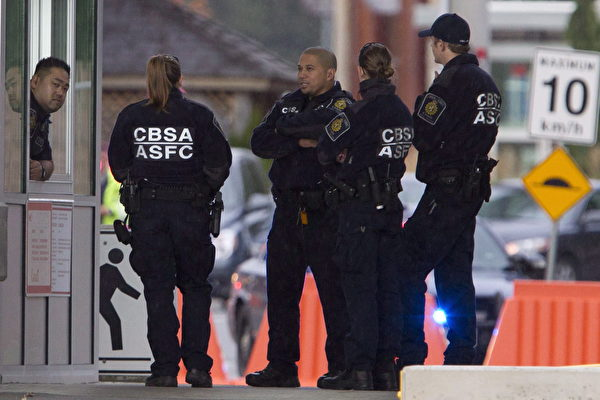

CBSA表示，对临时和永久居民身份申请人的安全筛查，是由移民部、加拿大安全情报局（CSIS）和CBSA合作完成的。图为加拿大边境服务局官员资料照。（加通社） 【2024年08月07日讯】（记者周行多伦多报导）多伦多一名男子因涉嫌参与海外伊斯兰国（ISIS）暴力活动被控。有证据显示，他在参与恐怖活动后，成功移民加拿大，并成为公民。加拿大骑警上月底在多伦多北部的一家酒店，逮捕了艾哈迈德·埃尔迪迪（Ahmed Eldidi）和他26岁的儿子穆斯塔法·埃尔迪迪（Mostafa Eldidi）。他们已被指控6项与伊斯兰国有关的恐怖主义罪行。
对艾哈迈德·埃尔迪迪的指控，还包括一项他为伊斯兰国实施严重袭击罪，该事件发生在2015年，在加拿大境外。
据Global News报导，有消息人士称，该项指控源于伊斯兰国当年发布的一段视频，视频展示一名男子用剑肢解一名囚犯。该名男子是艾哈迈德·埃尔迪迪，他在此视频发布后，才申请移民加拿大。他的儿子目前还不是加拿大公民。
加拿大边境服务局（CBSA）、加拿大移民部和公共安全部，目前都没回答为何艾哈迈德·埃尔迪迪能通过移民安检。
卡尔加里王家山大学（MRU）教授凯利·桑德伯格（Kelly Sundberg）说，这是安全检查系统的失误，“这是一次可怕的失败。”
联邦保守党领袖博励治（Pierre Poilievre）为此呼吁特鲁多政府，对明显的边境安全漏洞作出解释。
CBSA表示，对临时和永久居民身份申请人的安全筛查，是由移民部、加拿大安全情报局（CSIS）和CBSA合作完成的。移民部对申请人的个人信息和背景做审查，如果发现有疑问，会提交给CBSA做深入的安全审查；根据问题的性质，还可能提交给CSIS。
桑德伯格表示，穆斯塔法·埃尔迪迪不是加拿大公民，他可能面临被驱逐出境。另外，如果发现公民在移民申请时曾撒谎的话，政府还可能取消他们的公民身份。
责任编辑：岳怡